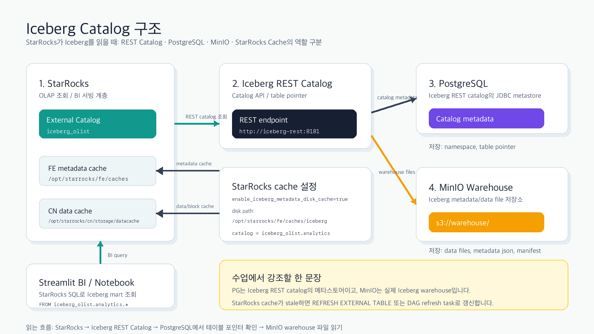

Catalog metadata / table pointer
“어떤 namespace와 table이 있는지”, “현재 metadata file이 어디인지”를 저장합니다. 테이블의 실제 데이터 파일을 들고 있지는 않습니다.
PostgreSQL, MinIO, StarRocks cache에 모두 “메타데이터 비슷한 것”이 있어 헷갈릴 수 있습니다. 이 문서는 세 계층의 역할을 나누고, 실제 명령어로 확인하는 방법을 정리합니다.

우리 Iceberg는 REST catalog 방식입니다. StarRocks와 Spark는 같은 Iceberg REST Catalog를 보고, REST Catalog는 내부적으로 PostgreSQL에 catalog metadata를 저장합니다. 실제 Iceberg metadata JSON, manifest, data file은 MinIO s3://warehouse/ 아래에 있습니다.
“어떤 namespace와 table이 있는지”, “현재 metadata file이 어디인지”를 저장합니다. 테이블의 실제 데이터 파일을 들고 있지는 않습니다.
Iceberg의 실제 실체입니다. metadata.json, manifest, parquet data file이
s3://warehouse/ 아래에 저장됩니다.
StarRocks가 external catalog를 빠르게 읽기 위해 metadata/data cache를 들고 있을 수 있습니다. stale cache 이슈는 이 조회 계층에서 발생할 수 있습니다.
| 구성요소 | 현재 값 | 역할 |
|---|---|---|
| StarRocks catalog | iceberg_olist |
StarRocks에서 Iceberg REST Catalog를 읽는 external catalog |
| Iceberg REST | http://iceberg-rest:8181 |
Spark와 StarRocks가 같이 보는 catalog API |
| PostgreSQL | iceberg-postgres:5432/iceberg |
Iceberg JDBC catalog metadata 저장소 |
| MinIO warehouse | s3://warehouse/ |
Iceberg metadata/data file 저장소 |
| StarRocks FE cache | /opt/starrocks/fe/caches |
external catalog metadata 조회 cache |
| StarRocks CN cache | /opt/starrocks/cn/storage/datacache |
remote block/data cache |
PostgreSQL에는 Iceberg 테이블의 실체가 아니라 catalog 등록 정보와 metadata file pointer가 있습니다.
ssh mini
cd /Users/dbkim/bootcamp
docker compose -f docker-compose.lite.yml exec -T iceberg-postgres \
psql -U iceberg -d iceberg -c '\dt'현재 보이는 테이블은 다음 두 개입니다.
public.iceberg_namespace_properties
public.iceberg_tablesdocker compose -f docker-compose.lite.yml exec -T iceberg-postgres \
psql -U iceberg -d iceberg -c '\d public.iceberg_tables'중요 컬럼은 metadata_location과 previous_metadata_location입니다.
| 컬럼 | 의미 |
|---|---|
catalog_name |
Iceberg REST/JDBC catalog 내부 이름 |
table_namespace |
analytics, bronze 같은 namespace |
table_name |
Iceberg table 이름 |
metadata_location |
현재 테이블 metadata JSON 파일의 S3 경로 |
previous_metadata_location |
이전 metadata JSON 파일의 S3 경로 |
docker compose -f docker-compose.lite.yml exec -T iceberg-postgres \
psql -U iceberg -d iceberg <<'SQL'
SELECT
table_namespace,
table_name,
metadata_location,
previous_metadata_location
FROM public.iceberg_tables
WHERE table_namespace = 'analytics'
AND table_name = 'olist_review_current';
SQL예상 결과는 이런 형태입니다.
analytics | olist_review_current |
s3://warehouse/analytics/olist_review_current/metadata/00000-...metadata.json
PostgreSQL에서 본 metadata_location이 실제 MinIO warehouse에 있는지 확인합니다.
이 단계가 “PG는 주소록, MinIO는 실체”를 증명합니다.
docker compose -f docker-compose.lite.yml exec -T minio sh -lc '
mc alias set local http://localhost:9000 minioadmin minioadmin >/dev/null
mc stat local/warehouse/analytics/olist_review_current/metadata/00000-7725114d-99d1-4f89-9fb8-c11862c536e1.metadata.json
'docker compose -f docker-compose.lite.yml exec -T minio sh -lc '
mc alias set local http://localhost:9000 minioadmin minioadmin >/dev/null
mc cat local/warehouse/analytics/olist_review_current/metadata/00000-7725114d-99d1-4f89-9fb8-c11862c536e1.metadata.json | head -20
'JSON에는 schema, table location, snapshot 관련 정보가 들어 있습니다.
{
"format-version" : 2,
"table-uuid" : "...",
"location" : "s3://warehouse/analytics/olist_review_current",
"current-schema-id" : 0,
"schemas" : [...]
}iceberg_tables 조회
테이블 이름과 metadata_location을 확인합니다. 이 값은 주소록의 포인터입니다.
metadata_location이 s3://warehouse/...를 가리키는지 확인
PostgreSQL이 실제 파일을 저장하는 것이 아니라 MinIO 경로를 가리킨다는 점을 확인합니다.
metadata.json 직접 조회
실제 Iceberg metadata file이 MinIO warehouse에 있음을 확인합니다.
BI가 stale하면 PG/MinIO 자체보다 StarRocks external table metadata cache refresh를 의심합니다.
일부만 맞습니다. REST catalog가 JDBC로 PostgreSQL을 쓰기 때문에 테이블 등록 정보와 현재 metadata file 포인터는 PostgreSQL에 있습니다. 하지만 실제 Iceberg metadata JSON, manifest, data file은 MinIO warehouse에 있습니다.
catalog 조회가 어려워집니다. 즉 어떤 테이블이 있고 현재 metadata pointer가 어디인지 확인하기 어렵습니다. 하지만 이미 MinIO에 저장된 파일 자체가 바로 사라지는 것은 아닙니다.
실제 metadata/data file을 읽을 수 없으므로 테이블 실체에 접근할 수 없습니다. PostgreSQL에 주소록이 남아 있어도, 주소가 가리키는 파일을 못 읽는 상태입니다.
둘 다 같은 Iceberg REST Catalog를 보기 때문입니다. 쓰는 쪽인 Spark와 읽는 쪽인 StarRocks가 같은 주소록을 공유하므로 같은 Iceberg table을 해석할 수 있습니다.
PostgreSQL이나 MinIO의 실체가 아니라 StarRocks 조회 계층의 cache 문제로 봐야 합니다.
이럴 때는 REFRESH EXTERNAL TABLE 또는 DAG의 refresh task로 갱신하는 방식이 필요합니다.